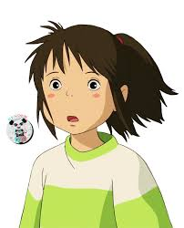

Chihiro Ogino

Chihiro Ogino é a protagonista de A Viagem de Chihiro. Enquanto se mudam para uma nova cidade, Chihiro e os seus pais tropeçam no mundo dos espíritos por acidente. Os seus pais são transformados em porcos e Chihiro tem de encontrar uma forma de salvar os seus pais e sair. Ela começa a trabalhar num balneário para uma bruxa chamada Yubaba que muda temporariamente o seu nome para Sen.
Detalhes
Chihiro é a filha de Akiichiro e Yumiko. Ela nasceu no Verão de 1990 no Hospital de Tóquio.
Personalidade
Inicialmente demonstrada como sendo petulante, egoísta, infantil e facilmente impressionável, o crescimento de Chihiro numa pessoa capaz é um fator central para o movimento da trama do longa, semelhante ao de Luke Skywalker. Durante a sua aventura no Mundo dos Espíritos, ela amadurece de uma criança chorona, egocêntrica e pessimista a uma jovem trabalhadora, responsável e otimista que aprendeu a cuidar dos outros. Para proteger os seus amigos e resgatar os seus pais do feitiço, Chihiro derruba a sua antiga personalidade e adapta-se ao novo ambiente para se tornar uma menina corajosa, prudente e altruísta. A força da sua ligação com Haku à medida que a história progrede acaba por evoluir para uma forma muito sincera de amor que dissipa as maldições de Yubaba e Zeniba sobre o espírito do rio.
Aparência física
Chihiro é uma menina de dez anos de idade que tem bochechas rosadas, cabelos e olhos castanhos. Ela é muito pequena e tem uma aparência infantil, além de um rosto rechonchudo. Seu traje inclui uma camiseta branca de manga média com listras verdes brilhantes, bermudas vermelhos brilhantes, meias brancas e tênis de velcro amarelo sol. Enquanto trabalha na casa de banho, ela está descalça e veste um roupão de kariginu cor de coral com um hitoe branco por baixo e calças curtas sashinuki, bem como um cordão tasuki para amarrar as mangas.